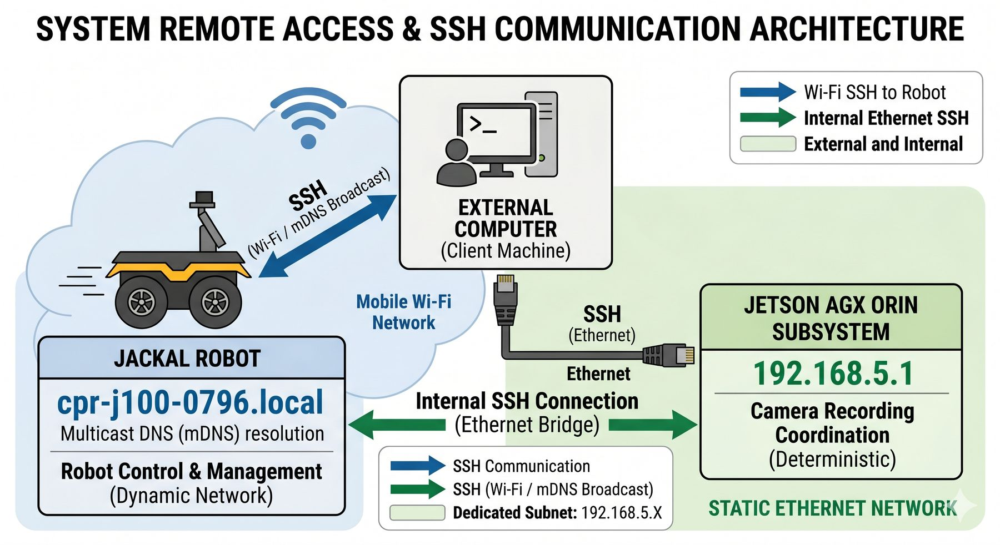

Jackal Autonomous Navigation
I rebuilt a Clearpath Jackal as a ROS 2 Humble platform that maps a building with LiDAR, localises itself on the saved map and drives to goals on its own. Every run can be recorded the same way each time, which makes it a repeatable data-collection robot rather than a demo.


/howHow it works
Map, localise, navigate
SICK TIM 2D LiDAR with SLAM Toolbox builds the map. AMCL and Nav2 localise on it and drive to goals set in RViz.
Missions that record themselves
A goal orchestrator sends the robot to a goal, starts rosbag2 and triggers the camera computers over SSH, so each run is captured the same way.
Tethered robot–drone link
A CAN bus and serial communication stack streams the robot's pose to embedded winch hardware for a tethered Jackal–drone system.
Lean on-board compute
Profiling and trimming the stack cut CPU load by 30%, leaving headroom for perception and recording.
/galleryGallery


/stack